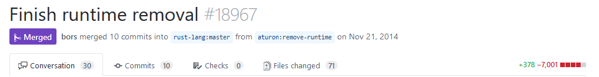

async in Rust 2018
The future of futures
I’m not Florian
whoami(1)
Katharina Fey ( @spacekookie )
- Active FOSS developer
- Avid tea drinker
- Hobbyist hardware maker
I also make some attrocious puns


whoami(2)
I do Rust things!
- Contributer of the CLI working group
- Member of the community team &
berlin.rs - Maintainer of several
use[ful|less]libraries
Concurrency is hard

Race conditions
vs
Inefficient scaling
Rust
Rust is a systems programming language that runs blazingly fast, prevents segfaults, and guarantees thread safety.

Safety
Memory safety
and
Thread safety
Rust breaks down these spectrums
It’s about empowering developers
No matter what kind of code you are writing now, Rust empowers you to reach farther, to program with confidence in a wider variety of domains than you did before.
— Rust book, foreword
Async
What is that?
What does it know?
Does it know anything?
Let’s find out!
“Do this thing but don’t make me wait”
Futures

No, not that type of Futures
Future = calculation that hasn’t happened yet
- Is probably gonna happen at some point
- Just keep asking
Event Loop = runtime for Futures
- Keeps polling
Futureuntil it is ready - Runs your code whenever it can be run
Why?

I’m here to show code and talk history
and I’m all out of code
Late 2013
libgreen

- Rust had green threading support
- Enabled non-blocking IO
Included a runtime in stdlib
- This came with a lot of problems
Rust wanted to go in a different direction
Late 2014
libgreen is dead, long live libgreen

Sorry, did I say libgreen, I meant mio.rs
mio.rs
‚ÄúMetal IO‚Äù ü§ò
- Light, non-blocking IO library
- Abstracts async over different platforms
- Eventually developed an ecosystem around it

Zero Cost Abstractions
= no discernible* runtime overhead
= code that you can’t write better by hand
This is how Iterators work too!
Mid 2016

- zero cost abstraction for futures
- Building async state-machines
tokio-core
- Wraps around
mio.rsandfutures.rs - Event reactor
Fast foward to 2018
It’s state machines all the way down
async & await
Write code that looks synchronous but really isn’t
Reminder: Futures are zero-cost-abstractions.
They disappear from the code at compile-time!
How?!
It’s complicated!
Clever people are working on it
In Groups
You might even call them “working groups”
networking-WG
- Implements async/await features in compiler
- Provides library ecosystem
Can I use this?
kinda üòÖ
Roadmap
async/awaitsyntax in nightly compiler- library ecosystem is still being polished
Expect more concrete progress early-2019
I don’t like answering questions on stage
You made it!
Follow me on twitter @spacekookie
Or: kookie@spacekookie.de
Thanks to my employers
- I do Rust work at Ferrous Systems
- I do Distributed Systems at Asquera